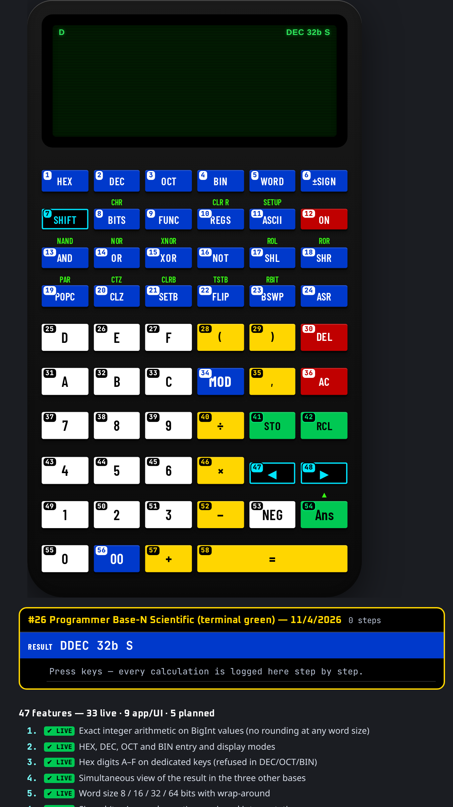

This manual belongs to the U-45 CALCULATORS app and describes calculator #26 — Programmer Base-N Scientific (terminal green) exactly as it behaves in the app. Every worked example and every drill answer in this book was run on the app's own keys by an automated checker before printing; only results that matched were kept.
Keys are written as a chip showing the key number and its face, for example #1 HEX. Numbers follow the numbering printed on the keys (switch it on with “# On”). A shifted function is written as two chips: the shift key, then the key that carries the function.
integer algebraic entry in the selected base (HEX/DEC/OCT/BIN), then =.
Open U-45 CALCULATORS, choose #26 from the home screen (or the jump list at the top), and the calculator appears with its numbered, colour-coded keys. Click or tap keys, or type on a keyboard.
Every key carries a small number in the same reading order as this manual (left→right, top→bottom; the navigation pad counts ▲ ▼ ◀ ▶ then its centre). Use “# On / # Off” in the bar above the calculator to show or hide them — the setting is remembered.
Keys are coloured by job: white = digits, yellow = operators/execute, blue = functions, green = memory/variables, red = clear/delete/power, black with cyan = shift/modes/menus/navigation. Press “Classic” to return to the original model colours and “Hi-Contrast” to come back.
Display text uses the U45 Display face, key legends use U45 Keys (a condensed face that stays readable on small keys) and key numbers / helper text use U45 Mono. All three are bundled inside the app, so they work offline.
The Copy button copies exactly what the display shows (indicators that are switched off are skipped) so you can paste a result into a message or spreadsheet.
Fit scales the calculator to your screen; 1:1 shows it at its design size. On a phone, Fit is the comfortable choice.
Reset rebuilds this calculator from scratch: display, memory, stack and modes return to their start-up state. Use it before each worked example in this manual.
On a computer you can type: digits, + − * / ^ ( ), Enter or = to execute, Backspace to delete, Esc to clear, arrows to move. Letters reach common functions (see the Keyboard shortcuts chapter).
Hover over (or long-press) a key to see “#number name”.
A cyan icon rail on the right of every calculator opens 15 panels: Currency (166 currencies, rates auto-updated from open.er-api.com or Frankfurter when online and cached with a date; the bundled dated snapshot is used offline), Units (exact SI factors), Health (published formulas, not medical advice), Simple, Complex, Loans, Construction, Mechanical and Engineering (30+ numbered tools each), Calendar generator, Customize (26 options, saved per calculator), Settings (31 options), History, Hide and View. On narrow phones the rail shows icons only.
Every calculation is logged per calculator with a date and time. Open History on the rail to search, re-use (types the input back into the calculator), copy, delete one, select several and delete, or delete all (asks for confirmation). History is stored encrypted on this device (AES-GCM); exporting it needs the passcode.
The green CS button between Restore and Social reads a problem from the camera, a photo, a PDF or a text file. Recognition (Tesseract OCR, English) runs offline on the device; an online language download is only used if you switch it on in Settings. Check and edit the recognised text, then Solve shows the steps offline. OCR is not available when the app is opened as a plain file:// page in a browser.
The layout selector between Fit and # offers Auto plus 12 layouts: 3D classic, 3D high-contrast, Classic, Pocket, Compact, Expanded, Desktop wide, Split, One-hand left, One-hand right, Large print and Minimal. Auto picks one for your screen and your choice is remembered per calculator. The View panel hides the top bars, the tool bar, the rail or everything (full screen); the round yellow ⤢ button at bottom-left (or Esc) always restores the normal view.
The Hide panel lists every button, rail icon and section of this calculator as tick boxes. Hiding is instant; unhiding asks for the app passcode.
Right-click, drag and long-press saving of images is blocked inside the app. Saving or sharing an image export (PNG, JPG, QR, calendar), printing a calendar, and downloading or sharing the app itself ask for the passcode, and exported images carry a U-45 watermark. Honest note: this cannot stop a screenshot or screen recording made by the operating system or another device.
U-45 CALCULATORS is an offline app: after the first load everything — including fonts — comes from the device.
| Colour | Group | Keys on this model |
|---|---|---|
| num | Digits & number entry | #25, #26, #27, #31, #32, #33, #37, #38, #39, #43, #44, #45, #49, #50, #51, #53, #55 |
| op | Operators & execute | #28, #29, #35, #40, #46, #52, #57, #58 |
| fn | Functions | #1, #2, #3, #4, #5, #6, #8, #9, #10, #11, #13, #14, #15, #16, #17, #18, #19, #20, #21, #22, #23, #24, #34, #56 |
| mem | Memory, variables & registers | #41, #42, #54 |
| clr | Clear, delete & power | #12, #30, #36 |
| mod | Shift, modes, menus & navigation | #7, #47, #48 |
47 features: 33 live on the keys, 9 app/UI features, 5 planned (documented but not yet working — they are clearly marked and never used in examples).
Calculator #26 is a integer algebraic entry in the selected base (HEX/DEC/OCT/BIN), then =. Each card below is one of its 33 working features, with the keys that reach it and, where one exists, a verified example.
Calculator #26 with key numbers shown (Hi-Contrast colours).
“Shift” = 2nd / f / SHIFT layer; “Alpha” = ALPHA layer; “3rd” = 3rd / g layer. A dot means the layer is empty on that key.
| # | Face | Shift | Alpha | 3rd | Group |
|---|---|---|---|---|---|
| 1 | HEX | · | · | · | fn |
| 2 | DEC | · | · | · | fn |
| 3 | OCT | · | · | · | fn |
| 4 | BIN | · | · | · | fn |
| 5 | WORD | · | · | · | fn |
| 6 | ±SIGN | · | · | · | fn |
| 7 | SHIFT | · | · | · | mod |
| 8 | BITS | CHR | · | · | fn |
| 9 | FUNC | · | · | · | fn |
| 10 | REGS | CLR R | · | · | fn |
| 11 | ASCII | SETUP | · | · | fn |
| 12 | ON | · | · | · | clr |
| 13 | AND | NAND | · | · | fn |
| 14 | OR | NOR | · | · | fn |
| 15 | XOR | XNOR | · | · | fn |
| 16 | NOT | · | · | · | fn |
| 17 | SHL | ROL | · | · | fn |
| 18 | SHR | ROR | · | · | fn |
| 19 | POPC | PAR | · | · | fn |
| 20 | CLZ | CTZ | · | · | fn |
| 21 | SETB | CLRB | · | · | fn |
| 22 | FLIP | TSTB | · | · | fn |
| 23 | BSWP | RBIT | · | · | fn |
| 24 | ASR | · | · | · | fn |
| 25 | D | · | · | · | num |
| 26 | E | · | · | · | num |
| 27 | F | · | · | · | num |
| 28 | ( | · | · | · | op |
| 29 | ) | · | · | · | op |
| 30 | DEL | · | · | · | clr |
| 31 | A | · | · | · | num |
| 32 | B | · | · | · | num |
| 33 | C | · | · | · | num |
| 34 | MOD | · | · | · | fn |
| 35 | , | · | · | · | op |
| 36 | AC | · | · | · | clr |
| 37 | 7 | · | · | · | num |
| 38 | 8 | · | · | · | num |
| 39 | 9 | · | · | · | num |
| 40 | ÷ | · | · | · | op |
| 41 | STO | · | · | · | mem |
| 42 | RCL | · | · | · | mem |
| 43 | 4 | · | · | · | num |
| 44 | 5 | · | · | · | num |
| 45 | 6 | · | · | · | num |
| 46 | × | · | · | · | op |
| 47 | ◀ | · | · | · | mod |
| 48 | ▶ | · | · | · | mod |
| 49 | 1 | · | · | · | num |
| 50 | 2 | · | · | · | num |
| 51 | 3 | · | · | · | num |
| 52 | − | · | · | · | op |
| 53 | NEG | · | · | · | num |
| 54 | Ans | ▲ | · | · | mem |
| 55 | 0 | · | · | · | num |
| 56 | 00 | · | · | · | fn |
| 57 | + | · | · | · | op |
| 58 | = | · | · | · | op |
Every key on calculator #26, in number order, with every function it carries in this app.
8 examples, each run on this calculator's keys by the U-45 checker. Follow the chips in order.
Calculate 12 AND 10. Press Reset first.
#49 1 → #50 2 → #13 AND → #49 1 → #55 0 → #58 =
Display shows 8 — expected 8. ✔ verified on the app.
Calculate 12 OR 3. Press Reset first.
#49 1 → #50 2 → #14 OR → #51 3 → #58 =
Display shows 15 — expected 15. ✔ verified on the app.
Calculate 15 XOR 5. Press Reset first.
#49 1 → #44 5 → #15 XOR → #44 5 → #58 =
Display shows 10 — expected 10. ✔ verified on the app.
Calculate 1 SHL 10. Press Reset first.
#49 1 → #17 SHL → #49 1 → #55 0 → #58 =
Display shows 1024 — expected 1024. ✔ verified on the app.
Calculate 100 MOD 7. Press Reset first.
#49 1 → #55 0 → #55 0 → #34 MOD → #37 7 → #58 =
Display shows 2 — expected 2. ✔ verified on the app.
Calculate NOT 0. Press Reset first.
#16 NOT → #55 0 → #58 =
Display shows -1 — expected -1. ✔ verified on the app.
Calculate 17 ÷ 5. Press Reset first.
#49 1 → #37 7 → #40 ÷ → #44 5 → #58 =
Display shows 3 — expected 3. ✔ verified on the app.
Calculate POPCNT(255). Press Reset first.
#19 POPC → #50 2 → #44 5 → #44 5 → #29 ) → #58 =
Display shows 8 — expected 8. ✔ verified on the app.
After a result, press ◀ or ▶ to bring the last expression back with the cursor in it; change one number and press = again.
Start a line with an operator (e.g. ×) and the calculator inserts Ans automatically — great for compound growth: 1.05 ×, then = = = …
Natural-display models keep fractions, √ and π exact. Press S⇔D to flip to decimal; press it again to return.
Trailing closing brackets can be left off; = closes them for you.
Type 2π or 3(4+1) without ×. Implicit multiplication binds tighter than ÷ on textbook models — use brackets if in doubt.
Store a value you reuse (e.g. g = 9.81) with STO and a letter; then type the letter in formulas.
x^y chains right to left: 2^3^2 = 2^9 = 512, not 64. Use brackets: (2^3)^2 = 64.
Check the D / R / G indicator before trig. sin 30 = 0.5 only in degrees.
M+ / M− keep a running total separate from the calculation line; RCL M shows it.
Use ▲ ▼ to scroll earlier lines; press = on an old line to re-run it.
14 extra functions sit on shifted layers. Press the layer key once, then the key: for example #7 then #8 → CHR; #7 then #10 → CLR R; #7 then #11 → SETUP; #7 then #13 → NAND.
Use Appendix B (function finder): look up the function, read its key number, then find that number on the keypad. Numbers run left→right, top→bottom from #1 to #58.
22 keys on this model have a keyboard shortcut (see chapter 7). Typing digits and operators is much faster than clicking.
Estimate first (round each number) and compare with the display. If the answer is 10× or 100× off, a decimal point or percent key was missed.
Press Copy in the bar above the calculator to put the display text on the clipboard instead of retyping it.
Hi-Contrast colours use black/white/yellow/blue/green/red with black or white text for maximum contrast; key numbers stay on in both colour schemes.
With the calculator open on a computer, these physical keys press the numbered keys below (Ctrl/Alt/⌘ combinations are left to the browser). Shifted functions are reached by clicking the shift key first.
| Keyboard | # | Key | Does |
|---|---|---|---|
| ( | #28 | ( | Opening bracket ( |
| ) | #29 | ) | Closing bracket ). Closing brackets at the end of a line may be omitted |
| Backspace Delete | #30 | DEL | DEL — delete the character at the cursor |
| , | #35 | , | Comma / argument separator (between function arguments, list items or coordinates) |
| Escape | #36 | AC | AC — clear all of the current calculation |
| 7 | #37 | 7 | Digit 7 |
| 8 | #38 | 8 | Digit 8 |
| 9 | #39 | 9 | Digit 9 |
| / | #40 | ÷ | Division ÷ |
| 4 | #43 | 4 | Digit 4 |
| 5 | #44 | 5 | Digit 5 |
| 6 | #45 | 6 | Digit 6 |
| * x | #46 | × | Multiplication × |
| ArrowLeft | #47 | ◀ | Cursor ◀ — move left in the line |
| ArrowRight | #48 | ▶ | Cursor ▶ — move right in the line |
| 1 | #49 | 1 | Digit 1 |
| 2 | #50 | 2 | Digit 2 |
| 3 | #51 | 3 | Digit 3 |
| - | #52 | − | Subtraction − |
| 0 | #55 | 0 | Digit 0 |
| + | #57 | + | Addition + |
| Enter = | #58 | = | Execute / = — evaluate the line and show the result (EXE / ENTER / =) |
| “# On / # Off” | show / hide key numbers |
| “Classic / Hi-Contrast” | switch key colours |
| “Copy” | copy display text |
| “Fit / 1:1” | scale to screen / design size |
| “Reset” | restart this calculator |
| Jump list | switch to another of the 45 calculators |
The negative key (−) and the subtraction key are different; “− 5” at the start uses Ans − 5.
If sin 30 gives −0.988, the calculator is in radians. Switch to degrees in SETUP.
−3² = −9 because the square is applied first. Type (−3)² to get 9.
1 ÷ 2π may be read as 1 ÷ (2π) on textbook models. Type 1 ÷ (2 × π) explicitly to be sure.
SHIFT applies only to the next key. If the S indicator is still lit, press SHIFT again to cancel.
AC clears the line but not memory; CLR (SHIFT 9) can clear memory and variables.
Old values (memory, stack, open brackets, worksheet values) can leak into the next calculation. Press Reset or clear before starting a new problem.
A shift / 2nd indicator that is still lit will turn the next key into its shifted function. Look at the display indicators before pressing.
The (−) negative key and the − subtraction key are different. Use (−) to start a negative number, − between two numbers.
Work each one on calculator #26, then check your keys and the answer in Appendix A. Every answer was produced by this calculator.
Without looking at the table, find each key on the picture. Answers in Appendix A.
| Function | Label | Keys |
|---|---|---|
| AC — clear all of the current calculation | AC | #36 |
| Addition + | + | #57 |
| Ans — recall the last answer into the current expression | Ans | #54 |
| Arithmetic shift right | ASR | #24 |
| Binary mode | BIN | #4 |
| Bit-function catalogue | FUNC | #9 |
| Bit-grid view on/off | BITS | #8 |
| Bitwise AND | AND | #13 |
| Bitwise NAND | NAND | #7 → #13 |
| Bitwise NOR | NOR | #7 → #14 |
| Bitwise OR | OR | #14 |
| Bitwise XNOR | XNOR | #7 → #15 |
| Bitwise XOR | XOR | #15 |
| Byte swap | BSWP | #23 |
| Character → code table | ASCII | #11 |
| Character view on/off | CHR | #7 → #8 |
| Clear all registers | CLR R | #7 → #10 |
| Clear bit n | CLRB | #7 → #21 |
| Closing bracket ). Closing brackets at the end of a line may be omitted | ) | #29 |
| Comma / argument separator (between function arguments, list items or coordinates) | , | #35 |
| Count 1-bits | POPC | #19 |
| Count leading zeros | CLZ | #20 |
| Count trailing zeros | CTZ | #7 → #20 |
| Cursor ▲ — up / previous history line / previous item | ▲ | #7 → #54 |
| Cursor ▶ — move right in the line | ▶ | #48 |
| Cursor ◀ — move left in the line | ◀ | #47 |
| Decimal mode | DEC | #2 |
| DEL — delete the character at the cursor | DEL | #30 |
| Digit 0 | 0 | #55 |
| Digit 1 | 1 | #49 |
| Digit 2 | 2 | #50 |
| Digit 3 | 3 | #51 |
| Digit 4 | 4 | #43 |
| Digit 5 | 5 | #44 |
| Digit 6 | 6 | #45 |
| Digit 7 | 7 | #37 |
| Digit 8 | 8 | #38 |
| Digit 9 | 9 | #39 |
| Division ÷ | ÷ | #40 |
| Execute / = — evaluate the line and show the result (EXE / ENTER / =) | = | #58 |
| Flip bit n | FLIP | #22 |
| Hex digit A | A | #31 |
| Hex digit B | B | #32 |
| Hex digit C | C | #33 |
| Hex digit D | D | #25 |
| Hex digit E | E | #26 |
| Hex digit F | F | #27 |
| Hexadecimal mode | HEX | #1 |
| Logical shift right | SHR | #18 |
| Multiplication × | × | #46 |
| Negative sign (−) — makes the next number negative. Different from the subtraction key | NEG | #53 |
| Octal mode | OCT | #3 |
| ON — power on | ON | #12 |
| One’s complement | NOT | #16 |
| Opening bracket ( | ( | #28 |
| Parity | PAR | #7 → #19 |
| RCL — recall a memory / variable | RCL | #42 |
| Remainder (modulo) | MOD | #34 |
| Reverse bits | RBIT | #7 → #23 |
| Rotate left | ROL | #7 → #17 |
| Rotate right | ROR | #7 → #18 |
| Set bit n | SETB | #21 |
| SHIFT / 2nd — the next key uses its upper (shift-coloured) function | SHIFT | #7 |
| Shift left | SHL | #17 |
| Show registers R0–R9 | REGS | #10 |
| Signed / unsigned | ±SIGN | #6 |
| STO — store the value into a memory / variable (press the target next) | STO | #41 |
| Subtraction − | − | #52 |
| Test bit n | TSTB | #7 → #22 |
| Two zeros | 00 | #56 |
| Word size / signed menu | SETUP | #7 → #11 |
| Word size 8 → 16 → 32 → 64 bits | WORD | #5 |
Programmer calculator working on exact integers (JavaScript BigInt) with a selectable word size. The evaluator, bit functions and display are original U-45 code.
DEC mode shows signed values when SIGNED is on; HEX/OCT/BIN always show the raw bit pattern of the word.
U-45 CALCULATORS models are independent software recreations; they are not affiliated with any calculator manufacturer and carry no third-party trademarks.
| #1 HEX | #2 DEC | #3 OCT |
| #4 BIN | #5 WORD | #6 ±SIGN |
| #7 SHIFT | #8 BITS ⇧ CHR | #9 FUNC |
| #10 REGS ⇧ CLR R | #11 ASCII ⇧ SETUP | #12 ON |
| #13 AND ⇧ NAND | #14 OR ⇧ NOR | #15 XOR ⇧ XNOR |
| #16 NOT | #17 SHL ⇧ ROL | #18 SHR ⇧ ROR |
| #19 POPC ⇧ PAR | #20 CLZ ⇧ CTZ | #21 SETB ⇧ CLRB |
| #22 FLIP ⇧ TSTB | #23 BSWP ⇧ RBIT | #24 ASR |
| #25 D | #26 E | #27 F |
| #28 ( | #29 ) | #30 DEL |
| #31 A | #32 B | #33 C |
| #34 MOD | #35 , | #36 AC |
| #37 7 | #38 8 | #39 9 |
| #40 ÷ | #41 STO | #42 RCL |
| #43 4 | #44 5 | #45 6 |
| #46 × | #47 ◀ | #48 ▶ |
| #49 1 | #50 2 | #51 3 |
| #52 − | #53 NEG | #54 Ans ⇧ ▲ |
| #55 0 | #56 00 | #57 + |
| #58 = |
U-45 CALCULATORS · Calculator #26 · cut out and keep